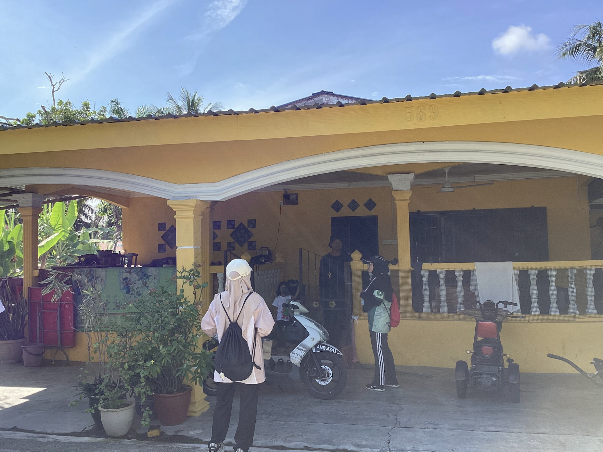

COORDINATE: N04°08'12.1" E100°54'17.9"
| No. | Common Name | Scientific Name | Quantity |
|---|---|---|---|
| 1. | Aloe Vera | Aloe vera | 1 |
| 2. | Bougainvillea | Bougainvillea glabra | 10 |
| 3. | Yam | Colocasia esculenta | 15 |
| 4. | Firecracker Plant | Russelia equisetiformis | 1 |
| 5. | Sugarcane | Saccharum officinarum | 10 |
| 6. | Turmeric | Curcuma longa | 5 |
| 7. | Lemongrass | Cymbopogon citratus | 2 |
| 8. | Papaya | Carica papaya | 4 |
| 9. | Banana | Musa spp. | 30 |
| 10. | Bamboo | Bambusa vulgaris | 2 clumps |
| 11. | Oil Palm | Elaeis guineensis | 1 |
| 12. | Mango | Mangifera indica | 2 |
| 13. | Durian | Durio zibethinus | 1 |
| 14. | Rambutan | Nephelium lappaceum | 1 |
| 15. | Breadfruit | Artocarpus altilis | 2 |
| 16. | Screwpine | Pandanus amaryllifolius | 1 |
| 17. | Snake Plant | Sansevieria sp. | 1 |